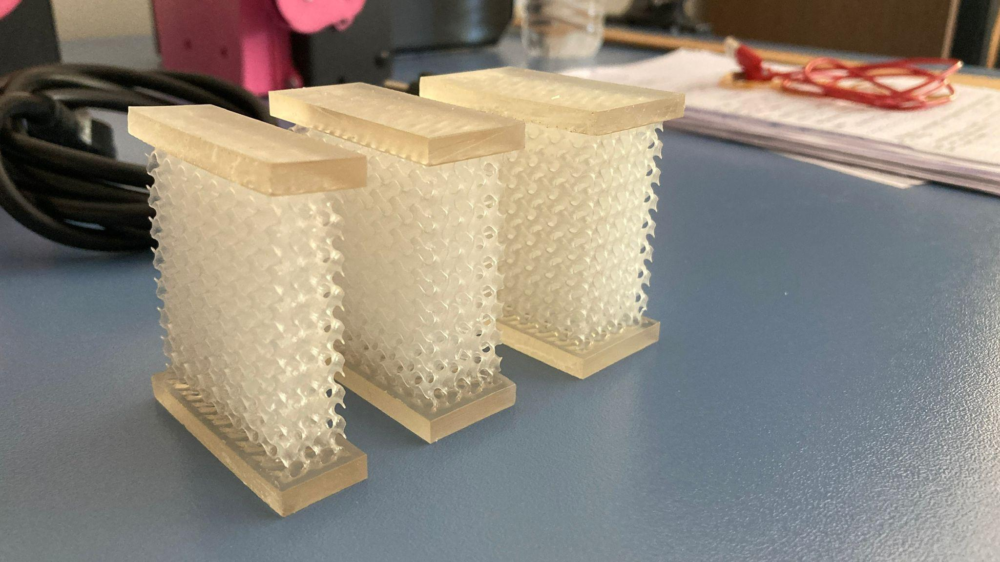
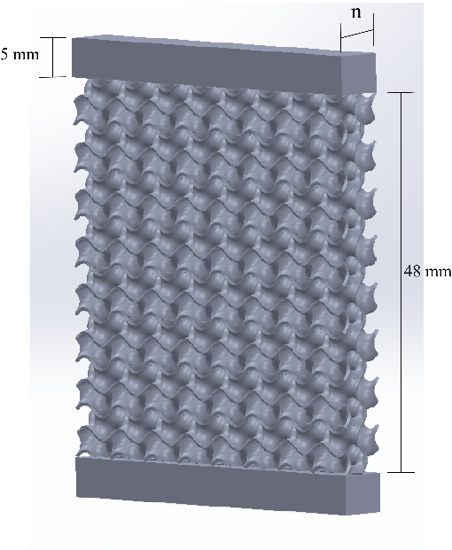
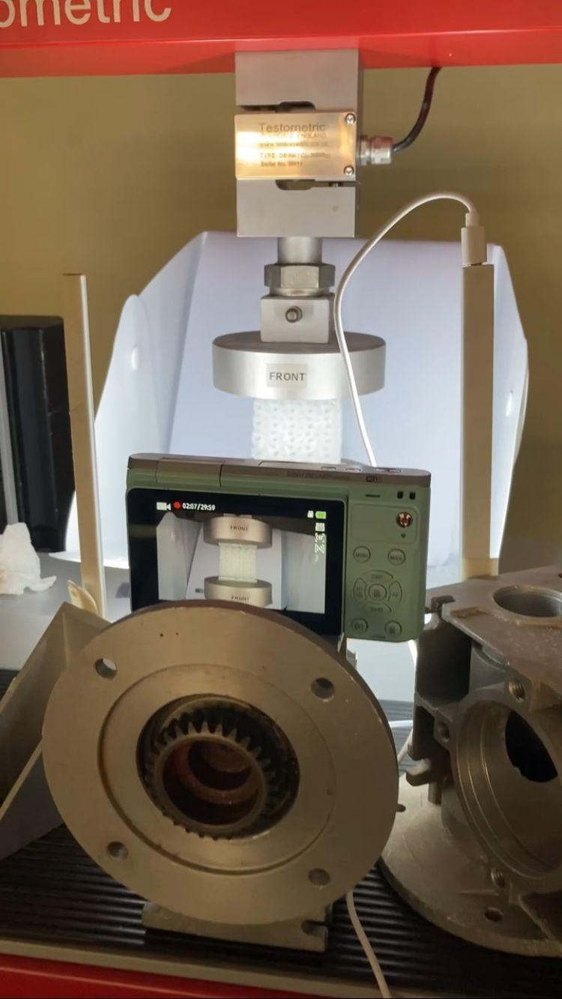
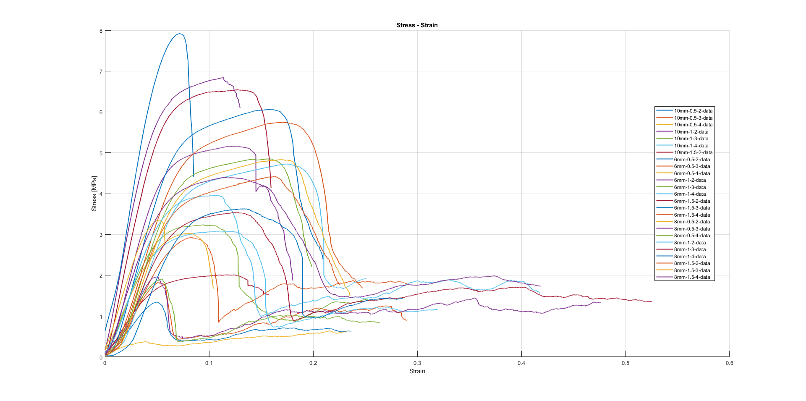

Parametric design / Testing / Regression
Gyroid Structures
Designing, printing and testing resin lattices, then using experimental data to examine what their geometry can—and cannot—predict.
- My contribution
- Project lead · Design, testing & analysis
- Status / Period
- Completed · 2025 · Final report: January 2026
7 min read · Manufacturing

The question
How does the geometry of a printed lattice change the way it carries load and fails? This TÜBİTAK 2209-A research project explored that question using gyroid structures: repeating, curved surfaces that form a continuous cellular geometry.
I led the project, connecting parametric design, resin printing and compression testing with data analysis. The study was supervised by Ali Taner Kuzu. The goal was to compare geometric choices through physical evidence and investigate whether a small experimental dataset could support design predictions.
27 design combinations. 25 specimens in the analysis. The outcome was a complete design-to-test workflow—and a clear limit: the regression models supported exploration, but were not accurate enough to establish a validated optimum.
Designing a comparable series
The nTop models varied three parameters while keeping the lattice orientation consistent. Each specimen was identified by cell size, wall thickness and level; for example, 8mm-1.5-3 means an 8 mm cell, a 1.5 mm wall and three repeated cells through the specimen depth.
| Design variable | Values explored |
|---|---|
| Cell size | 6, 8 and 10 mm |
| Wall thickness | 0.5, 1.0 and 1.5 mm |
| Level / repeats through depth | 2, 3 and 4 |
| Design combinations | 3 × 3 × 3 = 27 |
The lattice height and width were 48 mm for the 6 and 8 mm cells, and 50 mm for the 10 mm cells to accommodate whole cells. Depth was cell size multiplied by level. Solid 5 mm pads at the top and bottom provided contact surfaces for compression.


Cross-sectional area also changed between designs. I recorded the minimum section area from the CAD geometry for the stress calculations. This choice matters when interpreting the results: the reported stress is normalised by the minimum solid section, rather than the full external footprint.
Making and testing the specimens
The specimens were produced on an Anycubic Photon Mono M7 resin printer using Water-Wash Resin+. After printing, they were washed, supports were removed and each specimen received four minutes of UV post-curing.
Compression tests used a Testometric universal testing machine at 3 mm/min. Specimens were centred between the platens, and video recorded the development of cracks alongside the force, displacement and time data.


The report describes brittle collapse and several splitting patterns, including diagonal and V-shaped cracks. Some tests ended early when the machine detected a sudden load drop. Those shorter records are important when comparing energy absorption at a fixed strain.
Watch a compression test from the project
Turning test data into evidence
MATLAB processing converted the machine exports into stress–strain curves. Three quantities connected the raw measurements to the engineering questions: peak stress, the initial slope of the curve, and the area under it.
Here, F is force in N, A_{\min} is the minimum CAD section in mm², and \Delta L is the measured displacement in mm. The analysis used a reference lattice height L_0 of 48 or 50 mm. Stress is therefore in N/mm², equivalent to MPa, and strain is dimensionless.
| Quantity | Calculation | What it reveals |
|---|---|---|
| Peak stress | Maximum of the stress record | Highest section-normalised stress reached |
| Initial stiffness estimate | Linear fit over the initial 0–2% strain interval | Initial resistance to deformation |
| Integrated stress–strain response | Trapezoidal integration to a specified strain | Load sustained through deformation |
With stress in MPa, this integral has units of MJ/m³. Its normalisation follows the chosen section area and reference length; it should not be read as energy per total specimen volume without conversion. Similarly, the initial slope is a specimen-level stiffness estimate, not an independently measured resin modulus.


A shared endpoint is essential. A test that stops before 30% strain does not provide a measured value at 30%. Such records need to remain unavailable for that comparison, or be compared over a shorter interval reached by every included specimen.
What the results show
One useful comparison holds cell size and level constant. For the 8 mm cell / level 3 series, the report gives:
| Wall thickness | Minimum section area | Reported peak stress |
|---|---|---|
| 0.5 mm | 94.78 mm² | 1.96 MPa |
| 1.0 mm | 233.66 mm² | 3.54 MPa |
| 1.5 mm | 359.20 mm² | 4.84 MPa |
Within this series, thicker walls corresponded to higher peak stress, even after section normalisation. Across the full dataset, however, the response was more scattered. A trend in one series is not enough to establish a universal design rule.
The report also applied a three-factor ANOVA to peak stress. Cell size had a reported p-value of 0.036, while the main effects of thickness and level were not significant at the 0.05 threshold in that analysis. This is an exploratory result from the available specimens, not evidence that the other parameters have no physical effect.
How far could prediction go?
Python regression models used cell size, wall thickness and level to predict peak stress. With only 25 specimens, the study used leave-one-out cross-validation: each specimen was held out once while the model fitted the other 24. This provides an out-of-sample comparison within the available dataset; it does not replace testing new prints.
| Model | LOOCV R² | RMSE (MPa) | MAE (MPa) |
|---|---|---|---|
| Ridge regression | 0.334 | 1.466 | 0.977 |
| Linear regression | 0.325 | 1.475 | 0.977 |
| Degree-2 polynomial + Ridge | 0.302 | 1.501 | 0.954 |
| Random forest | 0.155 | 1.651 | 1.148 |
Ridge had the highest reported R² and lowest RMSE, with linear regression close behind. The polynomial model had the lowest MAE. None provided strong predictive performance: the best R² was only about 0.33.
The report's parameter search proposed a 6 mm cell, 1.5 mm wall and level 2, with a predicted peak stress of 6.47 MPa. That is a model-generated candidate, not a newly tested result or a confirmed optimum. The report's prose and model-selection output differ on which regressor produced it, so the value is retained only as an exploratory result.
What I would carry forward
This project connected geometry generation, physical testing, numerical processing and model evaluation in one workflow. Its most useful lesson was to consider the complete response—and the quality of the dataset—before choosing a design from a single score.
The next iteration would repeat specimens to quantify variability, record as-built dimensions and mass, and use an explicit specimen-to-area mapping in the analysis. Energy comparisons would include a check that each curve reaches the target strain. Any proposed optimum would then need a separate batch of validation prints.
Source: my TÜBİTAK 2209-A final report, dated 1 January 2026. Values above are selected reported results, not a new analysis of the raw test files. Figures show the project's actual specimens and experimental output.
Tools & methods
- nTop
- Resin 3D printing
- Compression testing
- MATLAB
- Python
- scikit-learn
- ANOVA
- LOOCV
- Additive Manufacturing
- Data Analysis